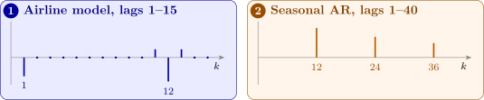

15.2 The multiplicative seasonal model
Box and Jenkins generalised the ARIMA model to deal with seasonality, giving the general multiplicative seasonal ARIMA model, SARIMA: \[ \phi _p(B)\Phi _P(B^s)W_t = \theta _q(B)\Theta _Q(B^s)Z_t , \qquad W_t = \nabla ^d\nabla _s^DX_t , \] where \(B\) denotes the backward shift operator, \(\phi _p\), \(\Phi _P\), \(\theta _q\) and \(\Theta _Q\) are polynomials of orders \(p\), \(P\), \(q\) and \(Q\), and \(Z_t\) denotes a purely random process. This is said to be a SARIMA model of order \((p, d, q) \times (P, D, Q)_s\). The variables \(\{W_t\}\) are formed from the original series \(\{X_t\}\) not only by simple differencing, to remove trend, but also by seasonal differencing, to remove seasonality.
The seasonal polynomials act on \(B^s\), so they link observations whole seasons apart. If \(P = 1\), the term \(\Phi _P(B^s)\) is \((1 - \Phi B^s)\), and \(W_t\) depends on \(W_{t-s}\), since \(B^sW_t = W_{t-s}\). The non-seasonal polynomials link neighbouring observations. The model is called multiplicative because the two kinds of dependence are combined by multiplying the polynomials, which produces interaction terms, as the next result shows.
Theorem 15.2.1 (The airline model). For the SARIMA \((0, 1, 1) \times (0, 1, 1)_{12}\) model \[ W_t = \nabla \nabla _{12}X_t = (1 + \theta B)(1 + \Theta B^{12})Z_t , \] \(W_t\) is an MA(13) process with non-zero autocorrelations only at lags \(1\), \(11\), \(12\) and \(13\): \begin {gather*} \rho (1) = \frac {\theta }{1 + \theta ^2} , \qquad \rho (12) = \frac {\Theta }{1 + \Theta ^2} , \\ \rho (11) = \rho (13) = \frac {\theta }{1 + \theta ^2}\cdot \frac {\Theta }{1 + \Theta ^2} . \end {gather*}
Proof. Multiplying out, \(W_t = Z_t + \theta Z_{t-1} + \Theta Z_{t-12} + \theta \Theta Z_{t-13}\): an MA(13) process with \(\beta _1 = \theta \), \(\beta _{12} = \Theta \), \(\beta _{13} = \theta \Theta \) and the other \(\beta \)’s zero. By Theorem 6.1.2, \(\gamma (0) = \sigma _Z^2(1 + \theta ^2 + \Theta ^2 + \theta ^2\Theta ^2) = \sigma _Z^2(1 + \theta ^2)(1 + \Theta ^2)\), and the non-zero products \(\beta _i\beta _{i+k}\) are:
- \(k = 1\): \(\beta _0\beta _1 + \beta _{12}\beta _{13} = \theta + \theta \Theta ^2 = \theta (1 + \Theta ^2)\);
- \(k = 11\): \(\beta _1\beta _{12} = \theta \Theta \);
- \(k = 12\): \(\beta _0\beta _{12} + \beta _1\beta _{13} = \Theta + \theta ^2\Theta = \Theta (1 + \theta ^2)\);
- \(k = 13\): \(\beta _0\beta _{13} = \theta \Theta \).
Dividing by \(\gamma (0)/\sigma _Z^2 = (1 + \theta ^2)(1 + \Theta ^2)\) gives the stated values; every other lag has no product. □
So the correlogram of the differenced series shows a spike at lag \(1\) from the non-seasonal part, a spike at lag \(12\) from the seasonal part, and smaller “satellite” spikes at lags \(11\) and \(13\) whose value is the product of the two. The model is named after the monthly airline-passenger series for which Box and Jenkins first used it, and it fits a remarkable range of seasonal series.
Proposition 15.2.2. The pure seasonal AR process \(X_t = \Phi X_{t-s} + Z_t\) with \(|\Phi | < 1\) has \(\rho (ks) = \Phi ^{|k|}\) for every integer \(k\), and \(\rho (j) = 0\) when \(j\) is not a multiple of \(s\).
Proof. As for the AR(1) (Theorem 8.1.1), \(X_t = \sum _{m\ge 0}\Phi ^mZ_{t-ms}\). The variables \(X_t\) and \(X_{t+j}\) share a shock only if \(j\) is a multiple of \(s\); if \(j = ks\) with \(k > 0\), the shared shocks \(Z_{t-ms}\) have weights \(\Phi ^m\) and \(\Phi ^{m+k}\), so \(\gamma (ks) = \sigma _Z^2\Phi ^k/(1 - \Phi ^2)\) and \(\rho (ks) = \Phi ^k\). □
The seasonal patterns are thus the non-seasonal ones stretched by a factor \(s\): a seasonal MA ac.f. cuts off after lag \(Qs\), a seasonal AR ac.f. decays geometrically at lags \(s, 2s, 3s, \dots \) (Figure 13), and the partial ac.f. behaves correspondingly. Identification proceeds as in Section 11, looking separately at the low lags and at the seasonal lags.

Example 15.2.3. Write out the SARIMA \((1, 0, 0) \times (0, 1, 1)_{12}\) model as an equation for \(X_t\).
Solution. With \(s = 12\), \(p = 1\), \(d = 0\), \(P = 0\), \(D = 1\), \(q = 0\) and \(Q = 1\), the model \(\phi _p(B)\Phi _P(B^s)W_t = \theta _q(B)\Theta _Q(B^s)Z_t\) with \(W_t = \nabla ^d\nabla _s^DX_t\) becomes \[ (1 - \alpha B)W_t = (1 + \theta B^{12})Z_t , \qquad W_t = \nabla _{12}X_t = X_t - X_{t-12} . \] So \(W_t - \alpha W_{t-1} = Z_t + \theta Z_{t-12}\), that is, \((X_t - X_{t-12}) - \alpha (X_{t-1} - X_{t-13}) = Z_t + \theta Z_{t-12}\), and \[ X_t = X_{t-12} + \alpha (X_{t-1} - X_{t-13}) + Z_t + \theta Z_{t-12} , \] so that \(X_t\) depends on \(X_{t-1}\), \(X_{t-12}\) and \(X_{t-13}\), and on the shocks \(Z_t\) and \(Z_{t-12}\).
Questions on this section
Stuck on something here? Ask below and it stays attached to this topic.